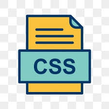

O que é a linguagem CSS ?? 
CSS é chamado de linguagem Cascading Style Sheet e é usado para estilizar elementos escritos em uma linguagem de marcação como HTML. O CSS separa o conteúdo da representação visual do site. Pense na decoração da sua página.
Vantagens do CSS
A diferença entre um site que implementa CSS e outro que não o usa é gigantesca e notável.
Você já deve ter visto um site que não carrega completamente ou tem um plano de fundo branco com texto azul e preto. Isso significa que a parte CSS do site não foi carregada corretamente ou não existe. é assim que um site somente com HTML se parece. Acredito que você vai concordar comigo de que isso não é muito bonito, certo?
Antes de usar CSS, toda a estilização tinha que ser incluída na marcação HTML. Isso significa que você deveria descrever separadamente todo o plano de fundo, as cores das fontes, os alinhamentos, etc. Mas o CSS permite que você estilize tudo em um arquivo diferente, criando assim o estilo separadamente. E, mais tarde, faça integração do arquivo CSS na parte superior da marcação HTML. Isso mantém a marcação HTML limpa e fácil de manter
Resumindo, com o CSS você não precisa mais escrever repetidamente como os elementos individuais se parecem. Isso economiza tempo, encurta o código e diminui a chance de erros. O CSS permite que você tenha vários estilos em uma página HTML, tornando as possibilidades de personalização quase infinitas. Hoje em dia, isso está se tornando mais uma necessidade do que um simples recurso.
Como CSS Funciona ??
Antes de usar CSS, toda a estilização tinha que ser incluída na marcação HTML. Isso significa que você deveria descrever separadamente todo o plano de fundo, as cores das fontes, os alinhamentos, etc.
Mas o CSS permite que você estilize tudo em um arquivo diferente, criando assim o estilo separadamente. E, mais tarde, faça integração do arquivo CSS na parte superior da marcação HTML. Isso mantém a marcação HTML limpa e fácil de manter O CSS usa uma sintaxe simples baseada em inglês com um conjunto de regras que o governam. Como mencionamos anteriormente, o HTML nunca teve a intenção de usar elementos de estilo, apenas a marcação da página. Foi criado para descrever apenas o conteúdo. Por exemplo: < p>Este é um parágrafo. < /p>.
Mas como você estiliza o parágrafo? A estrutura da sintaxe CSS é bem simples. Tem um seletor e um bloco de declaração. Você seleciona um elemento e depois declara o que deseja fazer com ele. Bastante simples, certo?